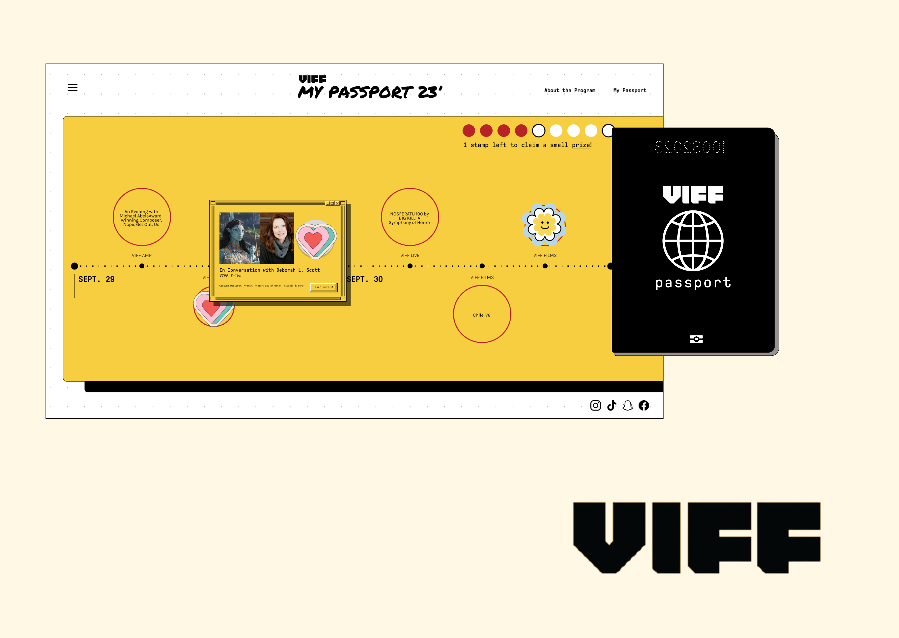
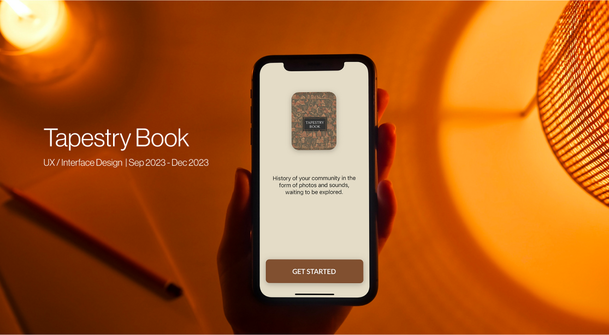

Work
View my projects

Digital Passport Program
A digital intervention for Vancouver International Film Festival to enhance in-person experience for the younger community and bring Gen Z attendees together in the digital era.
view project

Tapestry Book App
Tapestry Book is a digital prototype, developed to elevate seniors’ experiences of searching for and viewing photos on their mobile phones.
view project